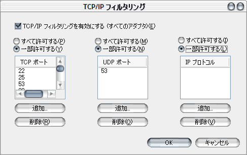

Security
基本的なセキュリティーの確保。
- OSに最新のパッチを当てる
- ポートのフィルタリング
- NetBIOS Over TCP/IP を無効にする
- 不必要なサービスを停止する
1. OSに最新のパッチを当てる
http://www.microsoft.com/japan/technet/treeview/default.asp?url=/japan/technet/security/fixedhome.asp
2. ポートのフィルタリング
コントロールパネル -- ネットワーク接続 -- 使用しているネットワークカード -- 「インターネットプロトコル(TCP/IP)」のプロパティ
-- 詳細設定(V)... -- 「オプション」タブ -- 「TCP/IP フィルタリング」のプロパティで必要なポートのみ追加。

ネットワークカード -- プロパティ -- 「詳細設定」タブ -- 「インターネット接続ファイアウォール」にチェック 設定は右下の「設定(G)...」ボタン。
3. NetBIOS Over TCP/IP を無効にする
コントロールパネル -- ネットワーク接続 -- 使用しているネットワークカード -- 「インターネットプロトコル(TCP/IP)」のプロパティ
-- 詳細設定(V)... -- 「WINS」タブ
で、 「NetBIOS over TCP/IPを無効にする(S)」にチェック。
4. 不必要なサービスを停止する （例：2000）
次のサービスが自動で開始されるように設定。
- DNSクライアント
- Event Log
- Logical Disk Manager
- Network Connections
- Plug and play
- Protected Storage
- Remote Procedure Call
- RunAs Service
- Security Accounts Manager
- Task Scheduler
- Windows Management Instruction
- Windows Management Instruction Driver Extensions
Logical Disk Manager Administrative Serviceが手動で開始されるように設定。
その他のすべてのサービスを無効。
|